구독 끝나기 전 마지막 49회 — 창기사 계열 옆모습 대기·걷기
결과 보고 · 사용자 확인 (10-23) · 0.31.3 배포 · 스펙 docs/specs/legacy-class-sheets.md "마지막 49회 계획"
유료 18 / 상한 49 (남은 31, 11-13 까지)
걷기 skeleton 6회 × 3
재시도 0
옆모습 편집 0회 · 석궁사수 하늘 쏘기 0회 (무료로 대신)
결과 요약
| 직업 | 바꾼 줄 | 유료 | 자동 검수 (pixel-critic) |
|---|---|---|---|
| 할버디어 | 대기·전투 대기·걷기·피격·쓰러짐·앉기 | 3 | pass 4.0 |
| 전쟁군주 | 대기·전투 대기·걷기·피격·쓰러짐·앉기 | 3 | pass 4.14 |
| 용황 | 대기·전투 대기·걷기·피격·쓰러짐·앉기 | 3 | pass 4.14 |
| 용기병 | 위 + 시트 전체 명암 두 단계 | 3 | pass 3.57 (1차 fix 3.29 → 수리) |
| 천마장군 | 대기·전투 대기·걷기·피격·쓰러짐·앉기 | 3 | pass 3.71 |
| 창기사 | 걷기만 (대기는 이미 옆모습) | 3 | pass 3.71 |
| 석궁사수 | 하늘 쏘기 2장 | 0 | pass 3.57 (1차 3.14 · 2차 3.29 fix → 수리, 색 24로 맞춤) |
방법: 대기 = 그 직업의 평타 시작 자세(옆모습)를 그대로. 걷기만 PixelLab 관절 애니로 뽑고, 허리 위는 대기 그림으로 덮어 모델이 멋대로 그린 무기를 걷어 낸 뒤 원래 무기를 다시 얹었습니다. 피격·쓰러짐·앉기는 새 대기 그림에서 코드로 만들었습니다.
게임 렌더러로 그린 모습
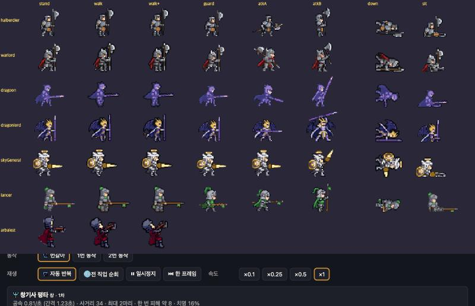
직업별 전 · 후 (줄: 대기 · 걷기 · 평타A)
할버디어
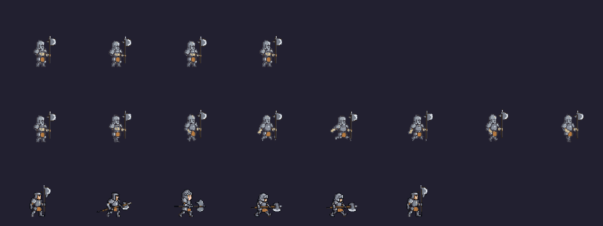
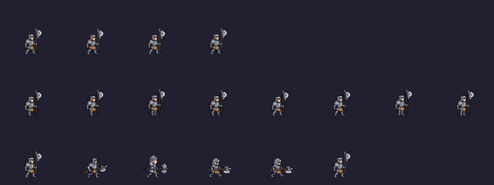
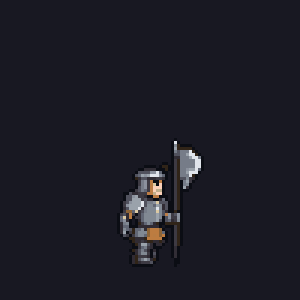
전쟁군주
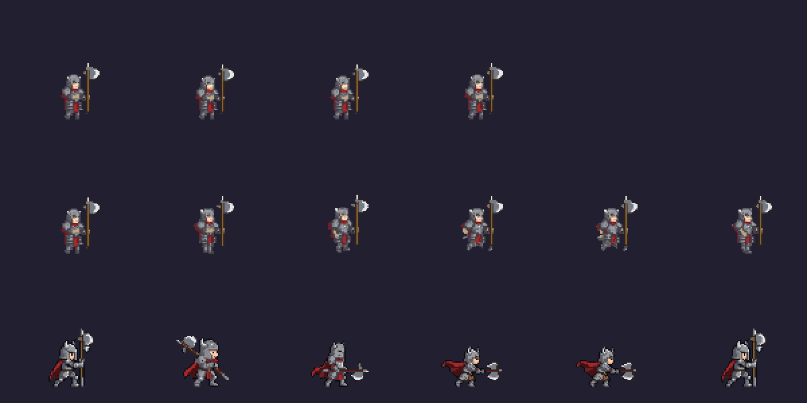
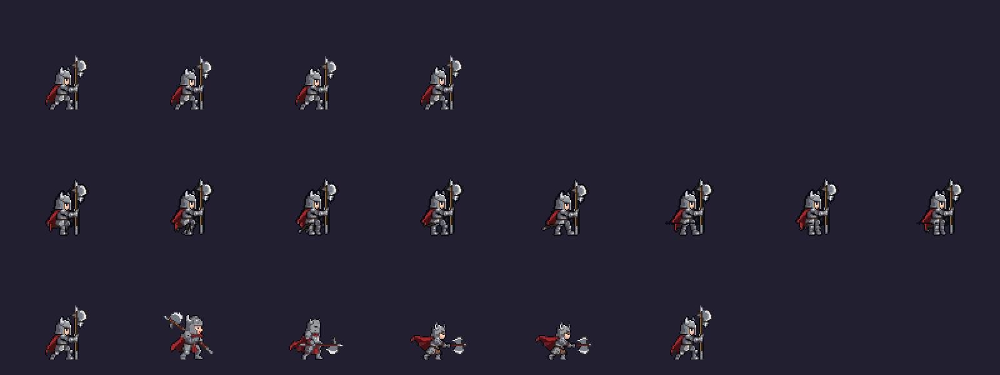
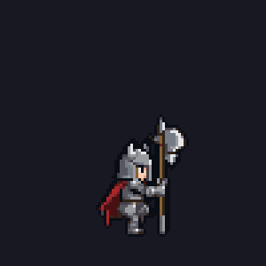
용황
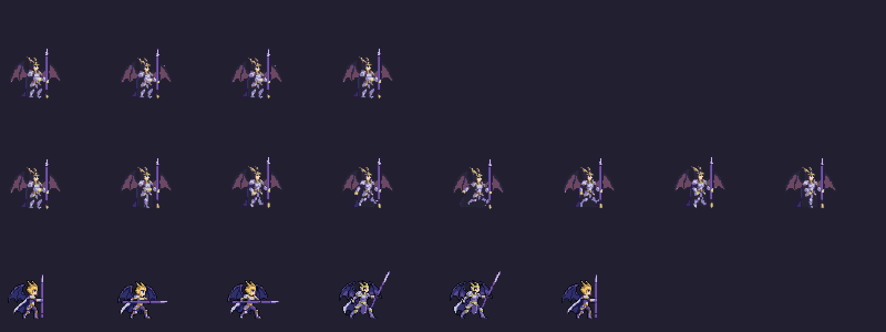
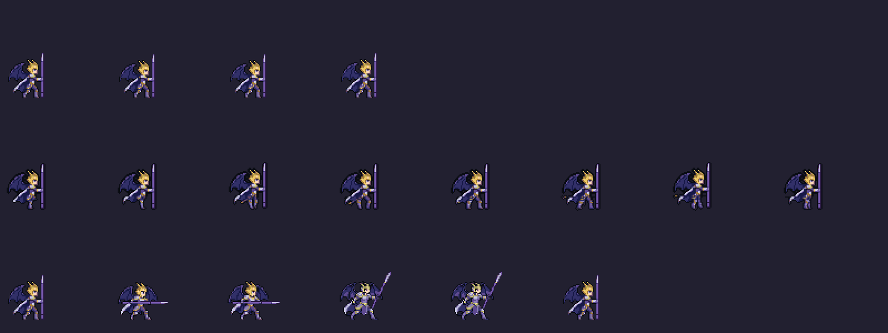
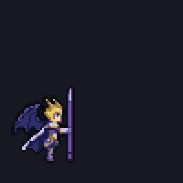
용기병
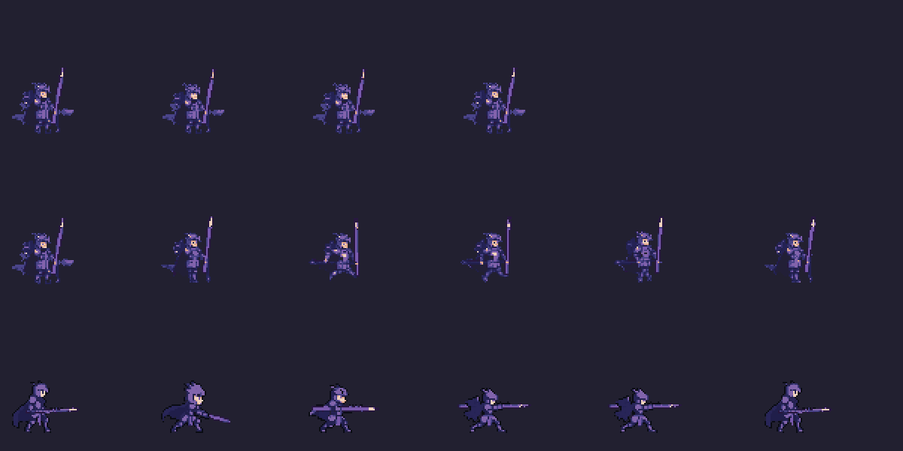
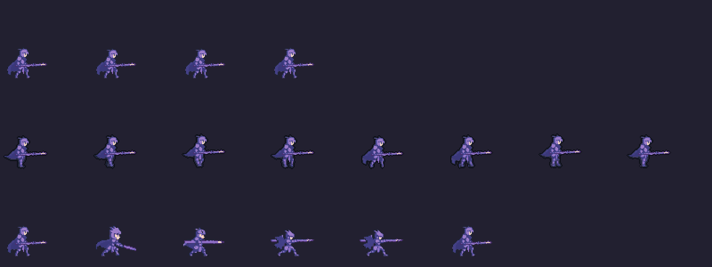
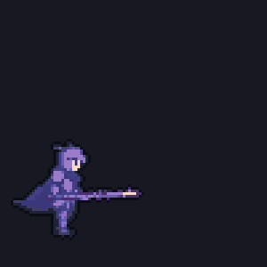
천마장군
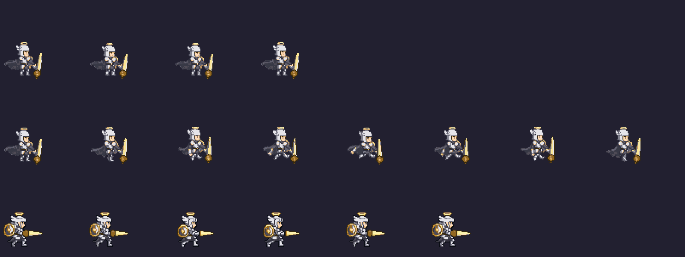
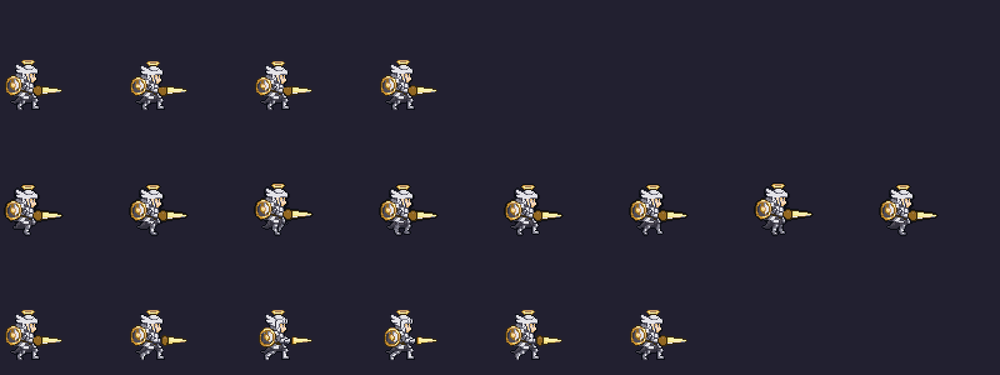
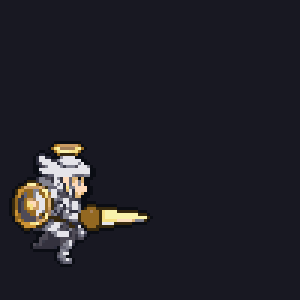
창기사
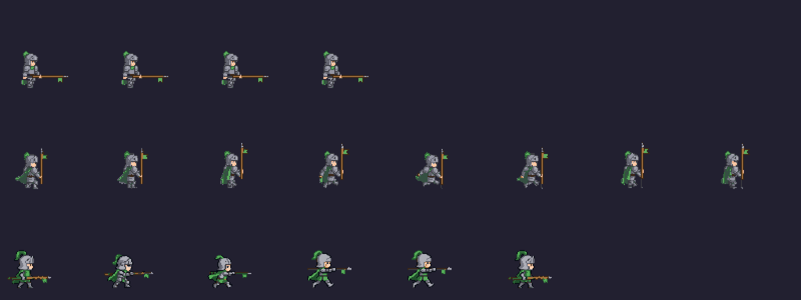
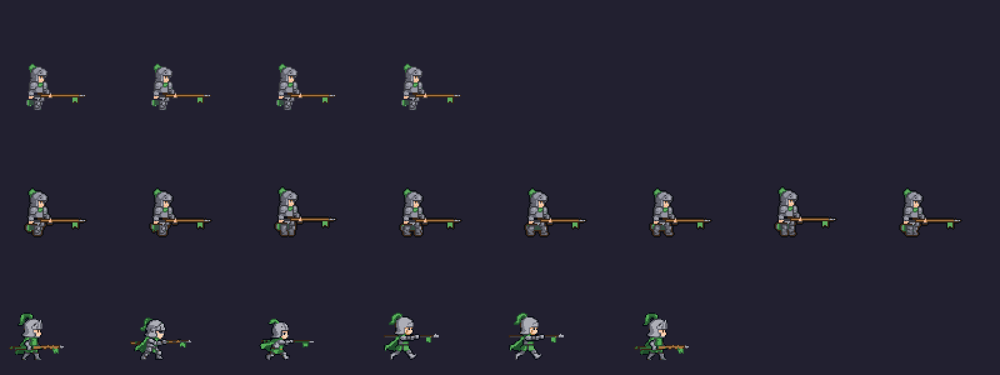
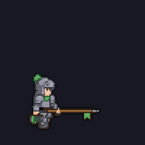
석궁사수 (줄: 평타A · 하늘 쏘기)
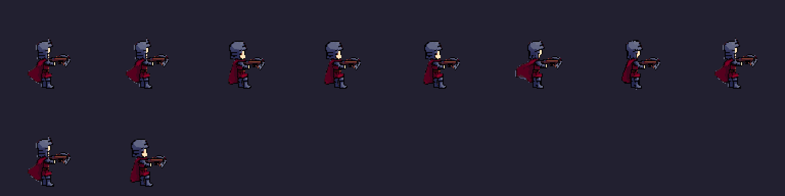
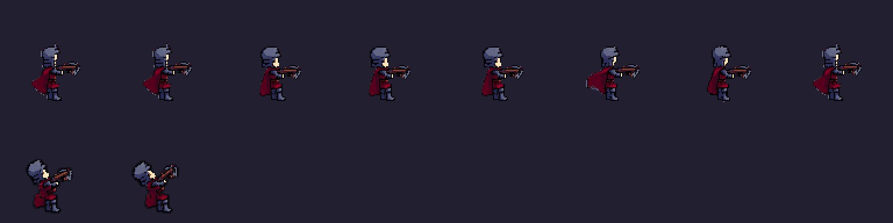
남은 흠 (선택)
- 창기사·천마장군: 1배에서 걸음 폭이 작게 읽힘
- 전쟁군주 5~6번 · 용황 6~7번: 뒷발 끝 1~2도트 돌출
- 석궁사수: 몸이 어두운 것은 시트 전체의 기존 색 (이번에 이 2장만 밝히지 않음)
- 오프라인 게임 원정 화면은 다른 세션이 고치는 중인 코드 때문에 못 봄 — 스킬 시험장에서 확인
확인: 스킬 시험장 평타 (직업 버튼으로 바꿔 보기) · 남은 유료 31회는 쓰지 않았습니다.